응용지질기사 (2012-08-26 기출문제)
1과목: 암석학 및 광물학
1. 다음 중 그레이와케(graywacke)에 대한 설명으로 옳지 않은 것은?
- 석영과 흑운모를 다량 포함하며, 분급정도가 양호한 조립질 사암이다.
- 색깔은 보통 암회색을 띤다.
- 모래입자는 일반적으로 원마도가 낮다.
- 암편, 장석, 유색광물과 같은 불안정한 성분을 많이 포함한다.
(정답률: 83%)

2. 저반으로 산출되는 화성암체에서 흔히 관찰되는 조직이 아닌 것은?
- 비정질조직
- 완정질조직
- 등립질조직
- 조립질조직
(정답률: 76%)
3. 편마암에 대한 설명으로 옳은 것은?
- 엽리가 잘 발달된 조립 입상 변성암이다.
- 원암은 주로 석회암이다.
- 주 구성광물은 감람석-휘석-사장석이다.
- 매몰변성작용과 동반되어 주로 생성된다.
(정답률: 82%)
4. 다음 중 현무암과 같은 고철질 광물이 풍부한 암석이 광역변성작용을 받았을 때 가장 고변성도의 변성분대에서 나타나는 변성광물은?
- 녹염석
- 녹니석
- 휘석
- 각섬석
(정답률: 49%)
5. 화성암에서 SiO2의 함량이 증가함에 따라서 증가하는 성분은?
- Fe2O3
- MgO
- K2O
- CaO
(정답률: 77%)
6. 어떤 지역의 퇴적암을 조사하여 다음과 같은 내용을 확인하였다. 이 암석의 퇴적장소는?
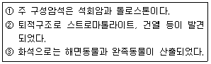
- 사막
- 하천
- 호수
- 조간대
(정답률: 79%)
7. 변성암의 종류가 다양한 원인과 관련이 가장 먼 것은?
- 원암의 종류
- 변성작용을 받은 시기
- 변성작용의 종류
- 변성작용의 정도
(정답률: 86%)
8. 저반과 저반사이에 관입당한 오래된 암석이 뾰족한 쐐기모양으로 꽂혀 있는 부분을 무엇이라 하는가?
- 암맥(Duke)
- 암경(Neck)
- 현수체(Roof pendant)
- 아스피테(Aspite)
(정답률: 79%)
9. 다음 중 퇴적암의 특징인 층리의 성인으로 가장 적절하지 않는 것은?
- 퇴적물 입자의 크기 변화
- 퇴적물의 색깔 변화
- 퇴적물의 종류 변화
- 퇴적물 운반 유체의 탄성도 변화
(정답률: 61%)
10. 제주도의 산굼부리는 매우 독특한 화산체의 형태를 보인다. 슈나이더(K. Schneider)의 화산분류에 따르면 무엇인가?
- 아스피테
- 톨로이데
- 코니데
- 마르
(정답률: 66%)
11. 다음 중 농도가 높은 소다용액에 넣어 끓인 후 크롬산칼륨으로 처리하면 황색으로 착색되는 광물은?
- 형석
- 돌로마이트
- 중정석
- 방해석
(정답률: 56%)
12. 광물의 색을 좌우하는 요소로 옳지 않은 것은?
- 광물 구성원소의 종류
- 광물의 결정구조
- 광물 결정의 대칭도
- 광물 표면의 물리적 효과
(정답률: 58%)
13. 마그마가 냉각될 때 아래의 화학반응으로 생성되는 각각의 광물로 옳은 것은?
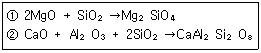
- ①=휘석, ②=알바이트(albite)
- ①=흑운모, ②=정장석
- ①=각섬석, ②=미사장석
- ①=감람석, ②=아노르다이트(anorthite)
(정답률: 50%)
14. 원자가 전자를 잃어버릴 경우 생성되는 것은?
- 양이온
- 음이온
- 중성자
- 양성자
(정답률: 82%)
15. 규산염 광물은 SiO4 사면체를 기본 구조로 하여 이 사면체들의 산소공유 정도에 따라 구조가 결정된다. 규산염 광물의 구조와 대표적인 광물에 대한 설명으로 옳지 않은 것은?
- 독립사면체 구조는 SIO4 사면체가 독립적으로 존재하는 것으로 Si:0=1:4이다. 대표적인 광물로는 저어콘과 감람석이 있다.
- 복사면체 구조는 2개의 SIO4 사면체가 하나의 산소를 공유한 것으로 Si:0=2:7이다. 대표적인 광물은 메릴라이트이다.
- 환상 구조는 SIO4 사면체가 2개의 산소를 공유하면서 하나의 고리를 형성한 것으로 Si:0=1:3이다. 대표적인 광물은 녹니석이다.
- 복쇄상 구조는 2개의 단쇄상 구조가 연결된 것으로 Si:0=4:11이다. 대표적인 광물로는 투각섬석이 있다.
(정답률: 73%)
16. 다음 중 이온결합성 광물에 대해 설명하는 법칙은?
- 폴링의 법칙
- 오일러의 법칙
- 보웬의 법칙
- 골드슈미트의 광물학적 상률
(정답률: 62%)
17. 다음 그림은 아라고나이트의 결정형에서 흔히 관찰되는 쌍정이다. 이러한 쌍점을 무엇이라 하는가?
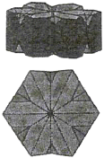
- 접촉쌍정
- 투입쌍정
- 취편쌍정
- 윤좌쌍정
(정답률: 69%)
18. 다음 압전기(piezoeletricity) 현상을 나타내는 대표적인 광물은?
- 방해석
- 섬아연석
- 감람석
- 자철석
(정답률: 56%)
19. 브라바이스(Bravais)의 공간격자의 종류 중에서 등축정계의 격자가 아닌 것은?
- 저심격자
- 체심격자
- 면심격자
- 단일격자
(정답률: 47%)
20. 다음 중 섬유상으로 산출되는 광물로 옳은 것은?
- 운모
- 투각섬석
- 전기석
- 남정석
(정답률: 49%)
2과목: 구조지질학
21. 다음 중 화산 호상열도(volcanic island arc)가 아닌 것은?
- 필리핀
- 일본
- 하와이
- 인도네시아
(정답률: 71%)
22. 대륙지각의 강도(strength)는 다음 중 어느 부분에서 가장 높은가?
- 취성영역의 최상부
- 연성영역의 최하부
- 취성-연성 전이대
- 취성영역의 중간부
(정답률: 73%)
23. 다음 설명에 해당하는 판경계부는?
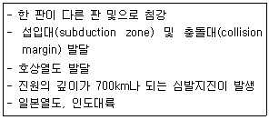
- 방산현 경계(divergent margins)
- 수렴형 경계(convergent margins)
- 변환단층 경계(transform fault margins)
- 대륙 경계(continental margins)
(정답률: 89%)
24. 어떤 학생이 야외조사를 하다가 습곡구조를 발견하였다. 이 습곡구조의 정확한 습곡축을 알기 위하여 평사투영법(stereographic projection)을 이용하여 양날개(wing)의 주향과 경사를 표시하였더니 아래의 그림과 같았다. 아래에서 이 습곡의 습곡축은?
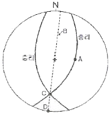
- A
- B
- C
- D
(정답률: 69%)
25. 다음 중 우리나라에서 해당되는 지질 시대의 지층이 아직 확인되지 않는 시기는 무엇인가?
- 트라이아스기
- 페름기
- 데본기
- 실루리아기
(정답률: 75%)
26. 다음은 특정 지점에서의 하도 너비(m), 하도 깊이(m), 구배(°), 유속(m/s), 하구언까지의 거리(m)를 측량하여 순서대로 나타낸 것이다. 하천의 유량이 가장 큰 지점은?
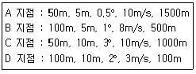
- A 지점
- B 지점
- C 지점
- D 지점
(정답률: 79%)
27. 하와이 열도에 있는 화산들의 절대연령을 측정한 결과 남동쪽에서 북서쪽으로 갈수록 연령이 증가함을 관찰할 수 있다. 남동쪽의 하와이(Hawaii)섬은 0.1Ma이고 북서쪽으로 300km 떨어진 니하우(Niihau)섬은 4.9Ma일 때 태평양판이 이동하는 속도는? (단, 화산활동은 현재의 하와이섬의 위치에서만 고정되어 발생된다고 가정함. Ma:백만년)
- 1.6cm/year
- 6.25cm/year
- 16cm/year
- 62.5cm/year
(정답률: 69%)
28. 다음 중 지표 근처에서는 단층면의 경사가 급하나 지하로 내려갈수록 단층면의 경사가 작아지는 단층은?
- 곡면단층(listric fault)
- 분리단층(detachment fault)
- 정향단층(stnthetic fault)
- 반향단층(antithetic fault)
(정답률: 63%)
29. 고생대 지층은 N50E/60SE의 주향/경사를 가지고 그 위에 신생대 지층은 N40E/20NW의 주향/경사를 가질 때 이 두 지층의 관계는?
- 난정합
- 비정합
- 사교부정합
- 준정합
(정답률: 58%)
30. 다음 중 멜란지(melange)의 형성 지역으로 알맞은 것은?
- 해구
- 해령
- 변환단층
- 화산
(정답률: 74%)
31. 우리나라에서 지진 위험도가 상대적으로 크다고 알려진 지체구조구는 어디인가?
- 경상분지
- 평남분지
- 소백산육괴
- 함북습곡대
(정답률: 78%)
32. 다음 중 판상 절리(sheeting joint)가 가장 잘 나타나는 암석은?
- 사암
- 화강암
- 석회암
- 안산암
(정답률: 69%)
33. 다음 중 정단층에 의해 주로 형성되는 지질 구조는?
- 돔과 분지(dome and basin)
- 용식요지(swallow hole)
- 지구-지루-(graben-horst)
- 클리페(klippe)
(정답률: 83%)
34. 다음에서 설명하는 지질구조는 무엇인가?
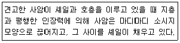
- 멀리언 구조
- 파랑 선구조
- 교차 선구조
- 부딘 구조
(정답률: 82%)
35. 다음 중 지진 발생의 사전 조짐과 관련이 없는 것은?
- 미진(tiny earthquakes)의 빈번한 발생
- 동물들의 기이한 행동
- 지구 자기(magnetism)의 불안정
- 급격한 기상변화
(정답률: 85%)
36. 익간각(inter-limb angle)이 0°인 습곡의 명칭은?
- 등사 습곡(isoclinal fold)
- 완만 습곡(gentle fold)
- 완사 습곡(open fold)
- 급사 습곡(close fold)
(정답률: 68%)
37. 다음 중 판 경계의 운동특성이 나머지 셋과 다른 하나는 무엇인가?
- 아라비아판-유라시아판
- 태평양판-남극판
- 태평양판-나스카판
- 오스트레일리아/인도판-남극판
(정답률: 63%)
38. 미국 서부의 'Basin and Range'를 형성시킨 가장 직접적인 메커니즘은?
- 배사습곡작용
- 정단층운동
- 스러스트단층운동
- 좌수향 주향이동성 단층운동
(정답률: 60%)
39. 지구내부의 구조 중 상부맨틀의 주 구성 암석은?
- 현무암
- 감람암
- 유문암
- 에클로자이트
(정답률: 75%)
40. 다음 중 암석이 연성(ductile)보다 취성(brittle)변형되기 가장 적절한 조건은?
- 주변 암반의 온도가 높을 때
- 변형이 천천히 일어날 때
- 지표면 가까운 위치에 암석이 있을 때
- 암석의 구성 성분이 석회암에 가까울 때
(정답률: 71%)
3과목: 탐사공학
41. 주파수영역 IP 탐사에서 전류 200mA를 흘릴 때 주파수 0.1Hz 및 2.5Hz에서 측정한 전위값은 각각 550mV및 550mV이었다. 주파수 효과는?
- 0.⑤
- 0.1
- 0.2
- 0.25
(정답률: 44%)
42. 지구화학적 원소분류 중 친동원소(Chalcophile elements)에 해당하는 것은? (단, Goldschmidt의 분류에 의함)
- Ni, Pt
- As, Zn
- Li, V
- He, Rn
(정답률: 82%)
43. 기준점보다 100m 낮은 지점에서 측정된 중력값이 1000mgal일 경우 기준점으로 프리에어 보정을 한 후 중력값은?
- 930.86mgal
- 969.14mgal
- 1030.86mgal
- 1069.14mgal
(정답률: 59%)
44. 다음 중 암석의 방사능 측정과 해석에 대한 설명으로 옳지 않은 것은?
- 방사능 측정단위는 큐리(curie)가 사용된다.
- 일반적으로 화성암이 퇴적암이나 변성암보다 더 강한 방사능을 나타낸다.
- 셰일과 사암의 지층 경계면을 방사능 탐사로 쉽게 파악할 수 있다.
- 일반적으로 많이 사용되는 방사능 측정기기는 가이거계수기(Geiger counter)와 신틸레이션 미터(Scintillation meter)이다.
(정답률: 46%)
45. 중력탐사 시 적용되는 보정에 대한 설명으로 옳지 않은 것은?
- 위도보정 : 위도가 높아짐에 따라 중력치가 감소하므로 극지방의 측점에서는 중력 측정치에 위도 보정치를 더해준다.
- 에트뵈스 보정 : 배나 항공기를 이용한 중력탐사에서 필요한 보정이다.
- 고도 보정 : 고도차가 중력에 미치는 영향을 제거하여 주는 보정으로, 프리에어 보정과 부게 보정이 있다.
- 지형 보정 : 측점 주위에 있는 불규칙한 지형의 영향을 보정하는 것으로, 지형이 산이나 계곡에 관계없이 항상 보정치를 측정치에 더해 주어야 한다.
(정답률: 62%)
46. 다음 중 방사능 탐사에서 주된 대상체가 아닌 것은?
- 우라늄(U)
- 토륨(Th)
- 칼륨(K)
- 칼슘(Ca)
(정답률: 74%)
47. 다음 중 지열광상의 부존을 확인할 수 있는 물리탐사법이 아닌 것은?
- MT법
- Curie 정법
- P-파 지연법
- 렌트겐 법
(정답률: 59%)
48. 탄성파 탐사를 2층 수평구조 상에서 수행할 때 수진기에 가장 늦게 도달하는 파는 다음 중 어느 것인가? (단, 발파점과 수진점은 1층 표면에 위치시키고, 1층의 탄성파 속도가 2층의 탄성파 속도보다 작다.)
- 직접파
- 굴절파
- 반사파
- 수진점 위치에 따라 다르다.
(정답률: 52%)
49. 지하에서 자연적으로 발생되는 전위 중 전기역학적 전위(electrokinetic potential)로 자연전위 검층시 시추이수가 공극성 지층 안으로 침투할 때 관측되는 전위는?
- 광화 전위
- 네르스트 전위
- 유동 전위
- 확산 전위
(정답률: 60%)
50. 다음 주시고선으로부터 시간절편을 이용하여 상부지층의 두께를 구했을 때 가장 근사한 값은 어느 것인가? (단, 수평 지층경계면 구조의 탐사기록이다.)
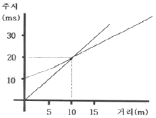
- 1m
- 3m
- 5m
- 7m
(정답률: 54%)
51. 탄성파 탐사를 수행할 때 지오폰 배열에 대한 설명으로 옳지 않은 것은?
- 모든 지오폰이 탐사 측선을 따라 놓인 방식을 동일측선배열이라 한다.
- 모든 지오폰이 탐사 측선에 직각으로 배열된 것을 수직배열이라 한다.
- 사각형 안에 수백 개의 지오폰을 그룹으로 설치한 것을 교차배열이라 한다.
- 여러 세트의 지오폰 배열은 일반적으로 거의 수직으로 상향 주행하는 반사파를 강화시킨다.
(정답률: 47%)
52. 전기비저항탐사 시 사용되는 전극배열 방법 중 단극-쌍극자배열에 의한 겉보기비저항(ρa) 계산식은? (단, V는 측정된 전위, I는 측정된 전류, n은 전극전개수, a는 측점간의 간격이다.)
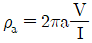
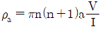
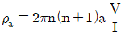
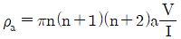
(정답률: 50%)
53. 탄성파참사의 에너지원 중 임펄스 형에 해당하지 않는 것은?
- 에어건
- 바이브로사이소
- 시추공 스파커
- 다이나마이트
(정답률: 71%)
54. 지하투과 레이다 탐사(GPR)에서 사용되는 전자기 펄스의 일반적인 주파수 대역은?
- 1Hz~100Hz
- 100Hz~1kHz
- 10kHz~1MHz
- 10MHz~1GHz
(정답률: 69%)
55. 전류가 암석을 통과하는 방식에 해당하지 않는 것은?
- 전해 전도
- 밀도 전도
- 진자 전도
- 유전 전도
(정답률: 50%)
56. 다음 중 퇴적층에서 셰일의 함량을 추정하는데 가장 효과적인 물리검층법은?
- 자연감마선 검층
- 전자유도 검층
- 공경 검층
- 대자율 검층
(정답률: 76%)
57. 산화조건(pH 5~8)의 지표환경에서 상대적 이동도가 가장 큰 원소는?
- K
- Fe
- Cl
- Al
(정답률: 67%)
58. 지하투과 레이다 탐사(GPR)에서 토양의 함수비가 증가할 경우 나타나는 현상으로 옳은 것은?
- 헤이다파의 속도가 증가한다.
- 레이다파의 감쇠 정도가 감소한다.
- 가탐심도가 증가한다.
- 수직분해능이 향상된다.
(정답률: 52%)
59. 다음 중 양성자의 세차 운동을 이용하여 총자기를 측정하는 자력계는?
- 핵 자력계
- 저울형 자력계
- Schmidt형 자력계
- Flux gate 자력계
(정답률: 63%)
60. 다음 중 그라운드롤(ground roll)과 가장 관계가 있는 것은?
- 표면파
- 직접파
- 다중반사파
- 실제파
(정답률: 65%)
4과목: 지질공학
61. 정수두 투수시험을 통한 수리전도도의 계산시 필요한 입력 자료가 아닌 것은?
- 물의 동점성 계수
- 시료의 단면적
- 시료의 길이
- 측정시간
(정답률: 68%)
62. 현지 암반의 초기응력 측정법으로 옳지 않은 것은?
- 압력터널시험법
- 플랫 잭 법
- 수압파쇄시험법
- 오버코어링법
(정답률: 62%)
63. 사면보강공법 중 록앵커(rock anchor) 공법에 대한 설명으로 옳지 않은 것은?
- 앵커의 인장력으로 암반블록의 전단저항력을 증가시켜 암반을 안정화시키는 공법이다.
- 대단위 사면붕괴에 대한 보강대책으로 유리하다.
- 시간경과에 따른 긴장재의 이완으로 인장력이 증가하는 효과를 이용한다.
- 파쇄가 심하고 절리가 발달된 지반에서는 적용성이 떨어진다.
(정답률: 79%)
64. 다음 그림은 평판에 작용하는 응력상태를 도시한 것이다. 최대, 최소주응력은? (단, 인장방향 : +, 압축방향 : -, 최대주응력, 최소주응력 순서임)
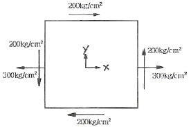
- 500kg/cm2, -200kg/cm2
- 200kg/cm2, -500kg/cm2
- 400kg/cm2, -100kg/cm2
- 100kg/cm2, -400kg/cm2
(정답률: 44%)
65. 암반 불연속면의 특징을 표현하기 위한 기재사항이 아닌 것은?
- 초기응력
- 방향
- 간극
- 연속성
(정답률: 50%)
66. 다음 수리상수에 대한 설명으로 옳지 않은 것은?
- 투수량계수는 수리경사가 큰 불포화 대수층을 수직 적으로 이동시킬 수 있는 물의 양을 의미한다.
- 저류계수는 단위 수두변화에 따라 단위 표면적당 투수성 층이 흡수하거나 배출하는 물의 체적을 의미한다.
- 비저류계수는 단위 수두변화에 대해 광물입자와 공극수의 압축 또는 팽창으로 인해 저장되거나 배출되는 포화층의 단위체적당 물의 양을 의미한다.
- 피압대수층의 저류계수는 비저류계수와 대수층 두께의 곱으로 표현할 수 있다.
(정답률: 49%)
67. 암반 불연속면의 전단강도 예측과 관련하여 Barton 등이 제시한 비선형 전당강도식에 포함되지 않는 변수는?
- 절리면의 압축강도
- 절리면의 간격
- 절리면의 거칠기 계수
- 절리면에 작용하는 수직응력
(정답률: 26%)
68. 주상절리가 발달된 암반사면에서 발생되기 쉬운 파괴형태는?
- 평면파괴
- 원호파괴
- 전도파괴
- 쐐기파괴
(정답률: 63%)
69. 점착력이 없는 토양(cohesionless soil)에 대한 전단시험결과, 수직응력과 전단응력이 항상 같았다면 이 토양의 내부마찰각은?
- 15°
- 30°
- 45°
- 60°
(정답률: 66%)
70. 통일분류법에 의해 표기된 다음 기호 중 점성토로 분류할 수 있는 것은?
- GQ
- SP
- SW
- CH
(정답률: 70%)
71. 현장암반의 공내재하시험에 대한 설명으로 옳지 않은 것은?
- 시추공 내에서 암반 변형계수를 측정하기 위한 시험으로 공내팽창계시험이라고도 한다.
- 팽창성 팩커를 사용하여 시추공벽에 하중을 가함으로써 압력에 따른 암반 변형을 측정한다.
- 시추공벽 암반의 모든 방향으로 균일하게 압력을 가하여 평균적인 암반 변형을 측정할 수 있다.
- 이방성이 심한 암반에서는 방향에 따른 변형계수를 측정할 수 있는 장점이 있다.
(정답률: 60%)
72. 모래로 채워진 튜브를 이용할 유체통과 실험을 통하여 Darcy의 법칙을 설명할 때, 다음 중 옳지 않은 것은?
- 튜브를 통과한 물의 양은 튜브의 단면적에 비례한다.
- 튜브를 통과한 물의 양은 튜브 양끝의 수두차에 반비례한다.
- 튜브를 통과한 물의 양은 튜브의 길이에 반비례한다.
- 튜브에 모래대신 투수성이 매우 낮은 점성토로 채워졌다면 Darcy의 법칙을 적용할 수 없다.
(정답률: 71%)
73. 암석의 인장강도를 간접적으로 측정하기 위해 실시하는 압열인장시험(Brazilian test)에서 인장강도(σt)를 구하는 식은? (단, P : 시편에 작용시킨 하중, D : 시편의 직경, r : 시편의 반경, l : 시편의 두께)
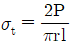
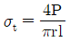
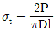
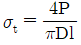
(정답률: 55%)
74. 암반분류법 중 RMR 분류법의 변수에 해당하지 않는 것은?
- 절리군의 숫자
- 지하수의 상태
- 암질지수(RQD)
- 무결암의 강도
(정답률: 44%)
75. 다음 중 시추조사법에 대한 설명으로 옳지 않은 것은?
- 오거 시추(auger boring)는 공내에 송수하지 않고 굴진하여 연속적으로 흙의 교란시료를 얻을 수 있다.
- 충격식 시추(percussion boring)는 연약한 점토 및 느슨한 사질토에 적당하고 시추공 바닥면 아래의 흙이 교란되지 않는 장점이 있다.
- 수세식 시추(wash boring)는 장치가 간단하고 경제적이며 매우 연약한 점토 및 세립의 사질토에 적당하다.
- 회전식 시추(rotary boring)는 토사에서 암반까지 적용범위가 넓고 암석시료를 채취할 수 있어 지반조사에 가장 널리 사용된다.
(정답률: 80%)
76. 다음 중 공극률(poeosity, n)과 공극비(void ratio. e)의 관계식으로 옳은 것은?
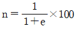
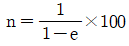
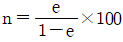
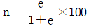
(정답률: 60%)
77. 터널 내측에서 지반을 구속하여 지반 자체가 갖고 있는 지보능력을 이용하는 방법이 록볼트 공법이다. 다음 중 록볼의 지보효과로 옳자 않은 것은?
- 매달림(봉합)효과
- 원지반 아치 형성 효과
- 내압효과
- 차수효과
(정답률: 60%)
78. 현장 원위치 시험법 중 사질토를 대상으로 해머를 자유낙하시켜 30m 관입하는데 필요한 타격횟수를 측정하는 것은?
- 베인전단시험
- 콘관입시험
- 표준관입시험
- 편찬재하시험
(정답률: 65%)
79. 두께가 4m점토층의 초기 공극률 30%였다. 침하가 발생한 후 측정한 공극률이 20%라면 침하량은 얼마인가?
- 0.3m
- 0.5m
- 0.7m
- 0.9m
(정답률: 53%)
80. 연약지반 개량공법 중 공사기간에 충분한 여유가 있을 때 적용하는 공법으로 연약 점토, 압축성이 큰 실트, 유기질 점토의 지반에 상재하중을 가하는 공법은?
- 샌드 드레인 공법
- 프리로딩 걱법
- 전면굴착지환공법
- 페이퍼 드레인 공법
(정답률: 72%)
5과목: 광상학
81. 우리나라의62 -아연 광상에 대한 설명으로 옳지 않은 것은?
- 연-아연 광상은 연화광상을 중심으로 한 태백산광화대에 밀집 분포한다.
- 연-아연 광상을 성인에 따라 분류하면 접촉교대광상, 열수교댁솽상, 열극총진맥상광상으로 구분된다.
- 연-아연 광상은 주로 석회암을 모암으로 괴상, 렌즈상 또는 파이프상으로 산출되는 것이 대부분이다.
- 열수교대광상으로 가장 대표적인 연-아연 광상은 신예미광상이다.
(정답률: 73%)
82. 한국의 지층 중 캠브리아기 최하부 지층으로 옳은 것은?
- 장산규암층
- 장선층
- 회동리층
- 동고층
(정답률: 42%)
83. 접촉교대광상에서 산출되는 주요 성분 원소별 광물의 연결로 옳지 않은 것은?
- Fe-자철석
- Cu-방연석
- Zn-섬아연석
- W-회중석
(정답률: 64%)
84. 기상우세 유체포유물과 액상우세 유체포유물의 공존이 지시하는 것은?
- 혼합(mixing)
- 비등(boiling)
- 분리(immiscibility)
- 냉각(cooling)
(정답률: 64%)
85. 석탄의 탄화정도에 의한 분류 순서로 올바른 것은?
- 토탄→갈탄→역청탄→무연탄
- 갈탄→토탄→역청탄→무연탄
- 갈탄→토탄→무연탄→역청탄
- 역청탄→갈탄→토탄→무연탄
(정답률: 66%)
86. 지금까지 확인되어 휴, 폐광 및 개발 중인 국내 금-은 광상의 가장 일반적인 광상 유형은?
- 스카른광상
- 열수맥상광상
- 열수교대광상
- 정마그마광상
(정답률: 43%)
87. 납석광상은 대표적인 열수변질점토광상에 속하는데 이러한 광상에서 흔히 수반되는 광물이 아닌 것은?
- 명반석
- 고령토
- 불석
- 다이아스포아
(정답률: 30%)
88. 우리나라의 지하자원 중 신생대 암석 내에서 주로 산출되는 것은?
- 납석
- 무연탄
- 석회석
- 벤토나이트
(정답률: 66%)
89. 국내 대표적인 함티탄 자철석 광상이 위치하는 곳은?
- 가평
- 음성
- 블음도
- 안면도
(정답률: 48%)
90. 우리나라의 중석광상을 성인적으로 크게 분류할 때 해당하지 않는 것은?
- 풍화잔류광상
- 페그마타이트광상
- 접촉교대광상
- 열수광상
(정답률: 49%)
91. 기성광상에서의 모암의 변질작용에 해당하는 것은?
- 황옥화작용
- 고령토화작용
- 녹니석화작용
- 변질 안산암화작용
(정답률: 66%)
92. 다음 현미경 사진의 광석 조직에서 관찰되는 현상은?
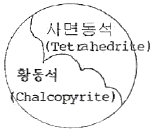
- 변질작용
- 용해작용
- 교대작용
- 분화작용
(정답률: 66%)
93. 일반적으로 금속광상 탐사를 위한 초기탐사 단계에서 조사지역 내 금속광상의 부존 가능성 파악에 유용한 조사대상인 모암변질작용(변질대)의 형성 원인에 해당되지 않는 것은?
- 모암과의 반응이 일어나는 온도와 압력
- 산화-환원 전위(EH-pH)
- 지하수위의 변동(상승 및 하강)
- 마그마내 휘발성분의 증기압
(정답률: 49%)
94. 국내에서 가장 큰 규모의 고령토 산출상을 보이는 경상남도 하동 및 산청 지역의 고령토의 주 구성광물은?
- 카올리나이트
- 할로이사이트
- 딕카이트
- 나크라이트
(정답률: 69%)
95. 반암동 광상(Porphyry copper deposits)에 대한 설명으로 옳지 않은 것은?
- 반상조직을 갖는 암석에 동(copper)을 포함한 광상이다.
- 일반적으로 품위가 낮고 규모가 큰 분산형 광상의 형태이다.
- 섭입대(Subduction zone) 부근에 주로 분포한다.
- 화성광상의 생성단계로는 페그마타이트 광상에 해당한다.
(정답률: 65%)
96. 호상철광층에 대한 설명으로 옳지 않은 것은?
- 산출상태에 따라 알로마형과 슈페리오형으로 대분된다.
- 알고마형은 슈페리오형보다 규모가 작다.
- 슈페리오형은 알고마형에 비해 일반적으로 산화물상이 우세하다.
- 알고마형은 화학적 퇴적암류에서 산출된다.
(정답률: 60%)
97. 다음은 가상(pseudomorph)에서 각 광물의 변질 관계를 나타낸 것이다. 서로 맞지 않는 것은?
- 황철석→침철석
- 이극석→방연석
- 적동석→공작석
- 형석→방해석
(정답률: 39%)
98. 우리나라 광상 성인의 유형으로 볼 때 각력 파이프(breccia pipe)형의 광상으로 알려진 것은?
- 달성광상
- 포천광상
- 신예미광상
- 물산광상
(정답률: 77%)
99. 성층암 누층이 습곡되었을 때 생기는 배사부의 공극을 채운 광맥은?
- 사다리형 광맥
- 안상 광맥
- 각력파이프 광맥
- 단층 광맥
(정답률: 70%)
100. 다음 중 화강암질 마그마의 분별작용 결과 배반원소(incompatible elements) 들이 농집되어 생성시키는 일반적인 광상의 형태는?
- 호상 철광상
- 페그미타이트 광상
- 마그마 분화 광상
- 스카른 광상
(정답률: 62%)